Persoonlijk advies
Geen snelle keuze uit een rek, maar een afweging die past bij het werk, uw smaak en de ruimte waar het komt te hangen.
Inlijsten op maat
Persoonlijk advies, rustige begeleiding en materialen van hoge kwaliteit. Niet alleen mooi aan de muur, maar ook technisch passend bij het werk dat u wilt bewaren of presenteren.
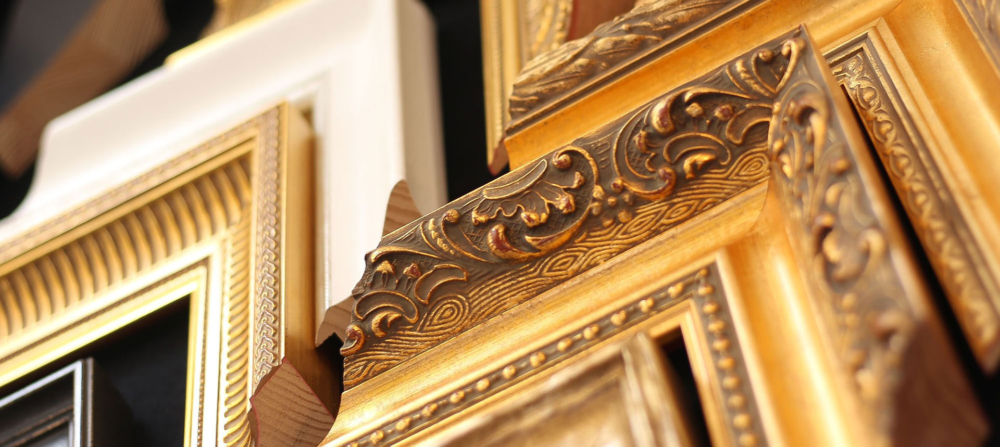
Drie stappen van uw werk naar de muur, zonder gedoe en met alle aandacht. Voorbeelden vindt u in het portfolio.
Breng uw werk mee naar het atelier, of stuur alvast een foto. We maken vrijblijvend een afspraak op een moment dat u uitkomt.
In alle rust kijken we naar uw werk, uw interieur en uw wensen. U krijgt eerlijk advies, zonder druk en zonder haast.
Uw werk wordt vakkundig ingelegd, gesneden en samengesteld. Binnen de afgesproken tijd klaar en perfect afgewerkt.
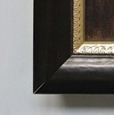
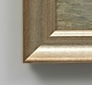
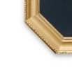
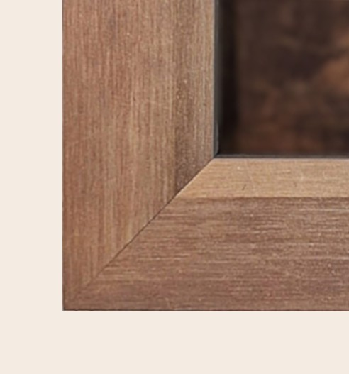
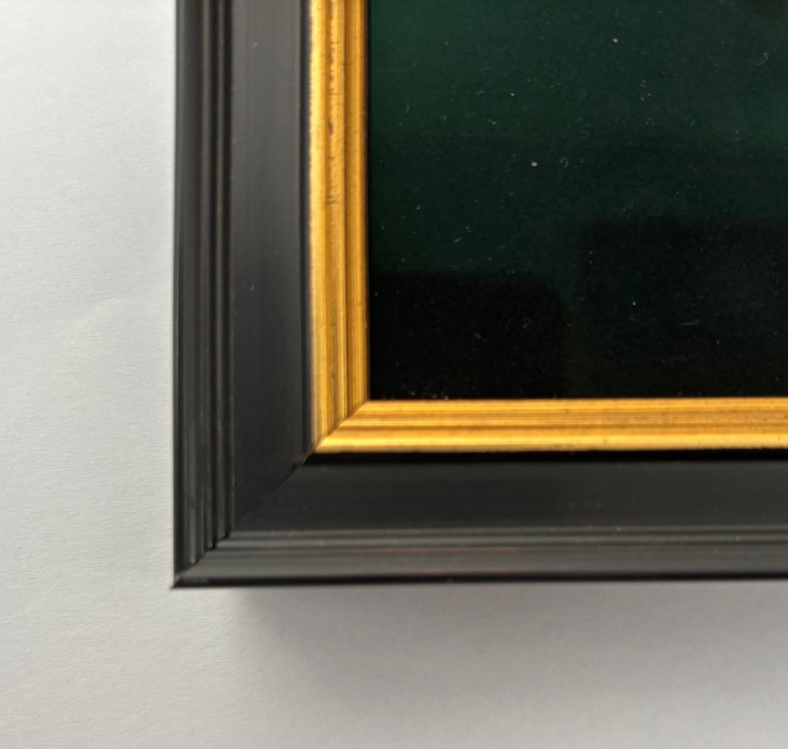
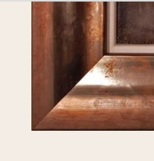
Een goede inlijsting begint niet bij een standaardlijst, maar bij kijken. Naar het werk, het materiaal, de uitstraling en de plek waar het uiteindelijk komt te hangen.
Daarom nemen we in het atelier de tijd om samen te vergelijken, te voelen en te kiezen. Soms is dat sober en terughoudend, soms rijker en klassieker. Altijd met respect voor het werk zelf.
Van maatwerk en passe-partout tot museumglas en restauratie: hieronder staat het aanbod helder bij elkaar.
Elke lijst op maat gesneden en samengesteld. We kiezen samen de juiste combinatie van lijst, passe-partout en glas.

Van sober wit tot dubbele passe-partout in elke kleur. Altijd zuurvrij en op museumkwaliteit.

Anti-reflecterend en UV-werend glas beschermt uw kunstwerk tegen licht, stof en vocht — onzichtbaar maar essentieel.

Uw mooiste foto's, prints en canvasdoeken inlijsten op een manier die past bij uw interieur en persoonlijke smaak.

Oude, beschadigde of versleten lijsten krijgen een nieuw leven. Ik herstel wat nodig is en zorg dat de lijst weer klaar is voor de toekomst.

Grote werken of een hele wand inrichten? Ik kom langs voor advies op maat.

Een eerste indruk van de soorten lijsten, hoeken en afwerkingen waaruit we samen kunnen kiezen.


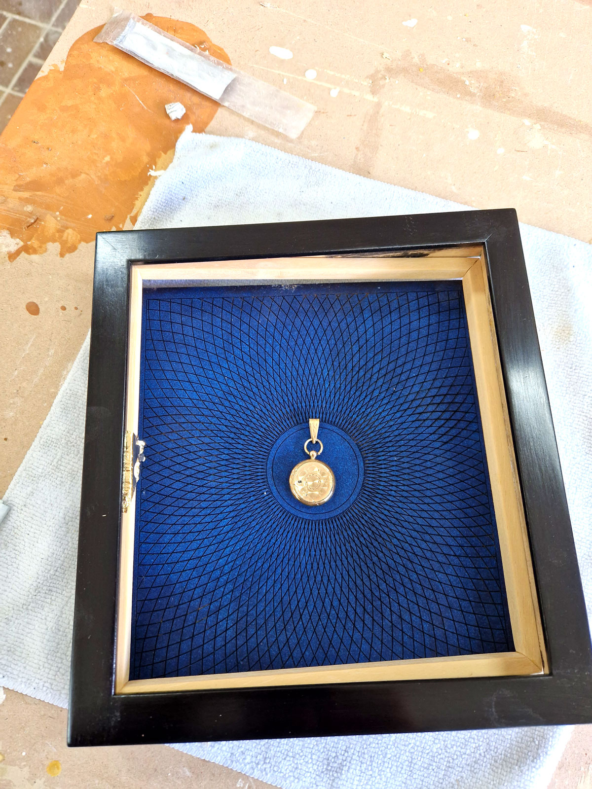
Deze aanvullende selectie laat nog beter zien hoeveel richting, materiaal en detail er mogelijk is binnen een goede inlijsting.
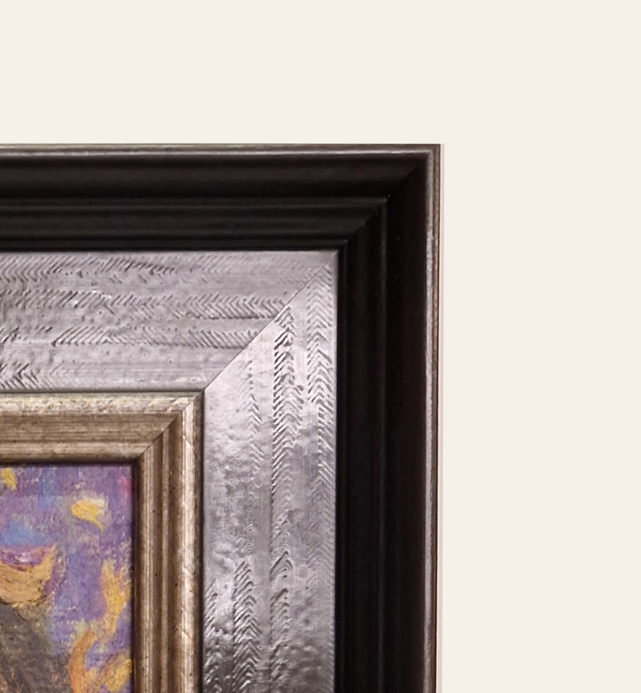
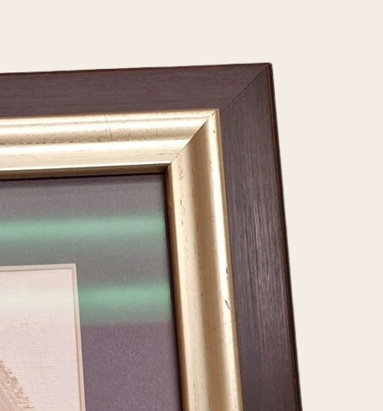
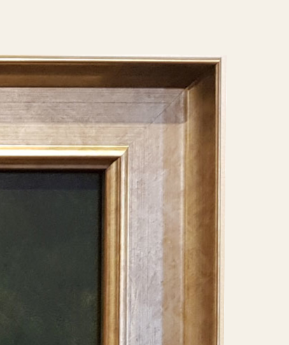
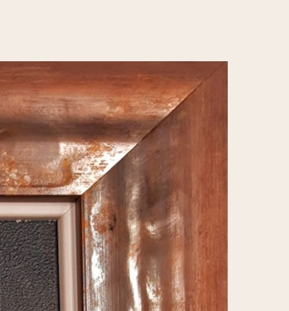
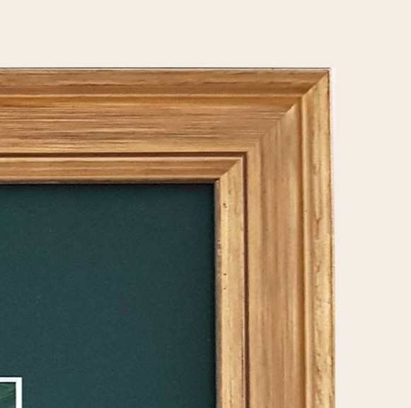
Een goede lijst doet meer dan mooi zijn. De juiste keuze helpt een werk beter uitkomen en beter bewaard blijven.
Geen snelle keuze uit een rek, maar een afweging die past bij het werk, uw smaak en de ruimte waar het komt te hangen.
Zuurvrije materialen, passend glas en een verzorgde afwerking beschermen het werk voor de lange termijn.
Het kiezen van een lijst hoeft niet gehaast te zijn. In het atelier is ruimte om te vergelijken, te twijfelen en tot de juiste keuze te komen.
Of het nu om een schilderij, foto, tekening, borduurwerk of object gaat: in het atelier zoeken we samen naar de juiste oplossing.